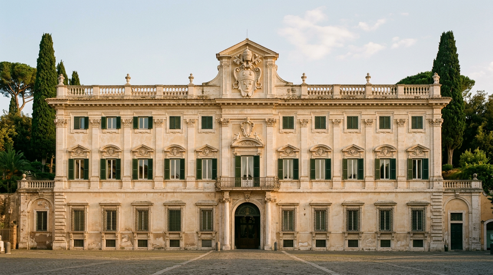
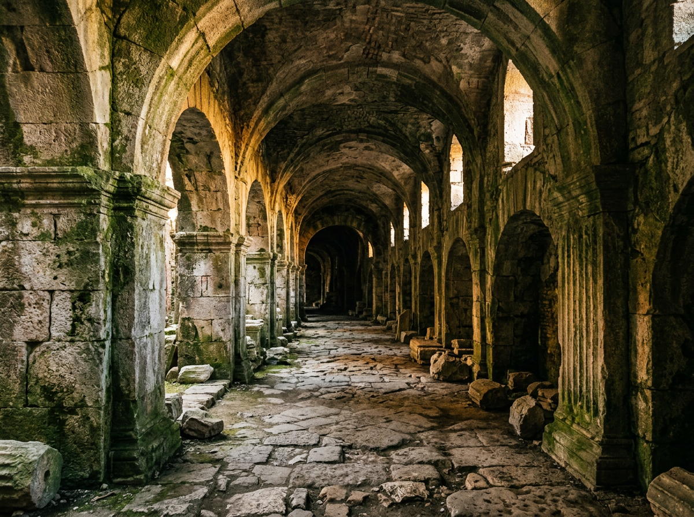
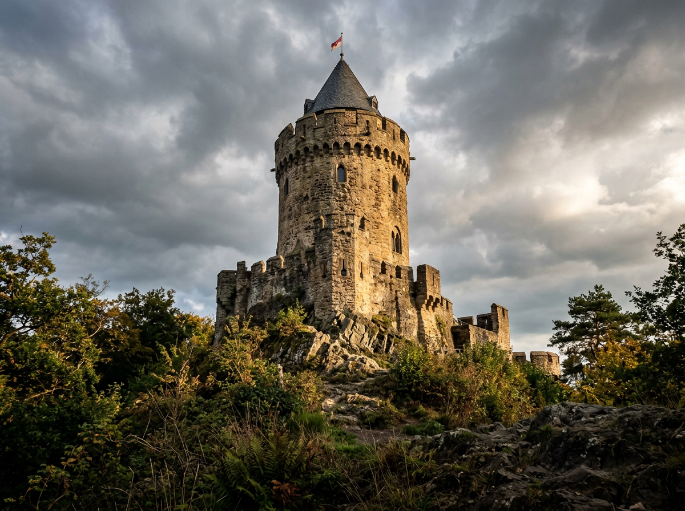
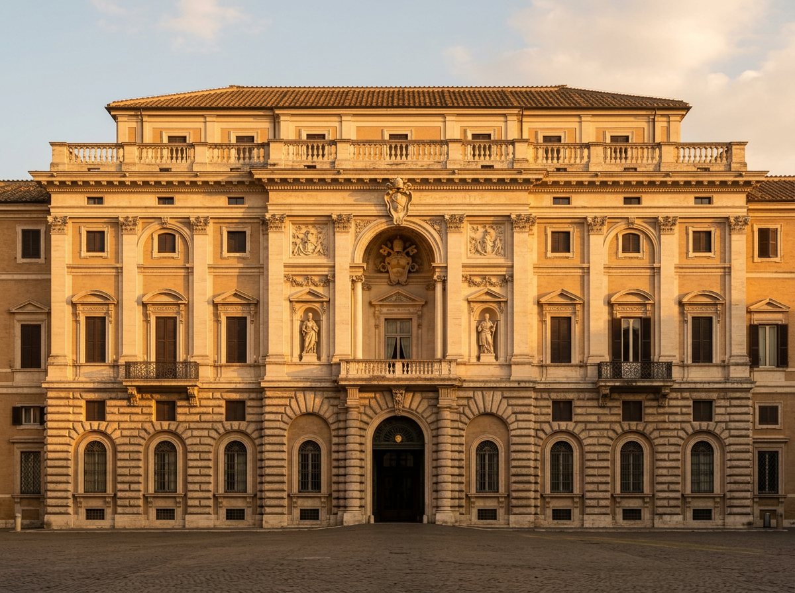
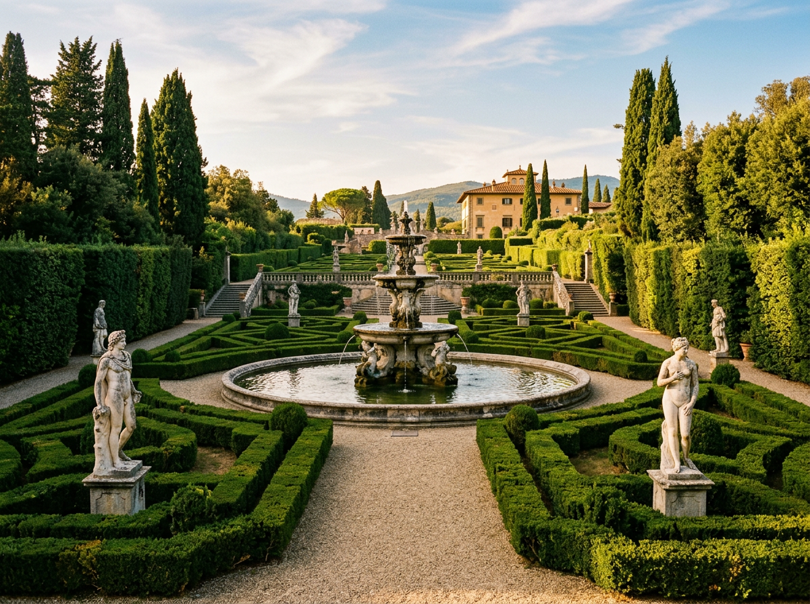
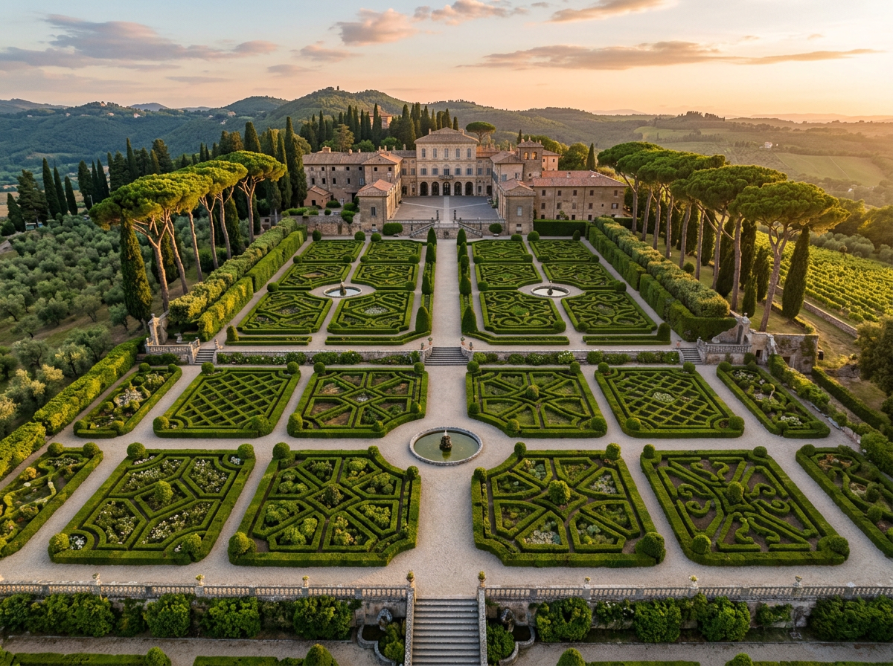
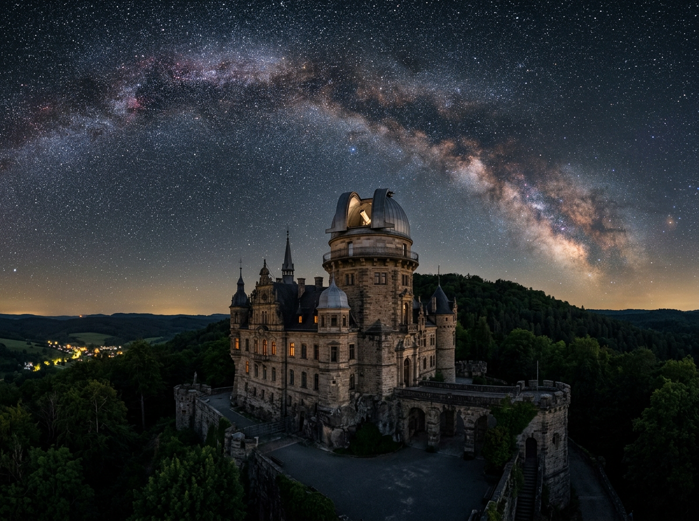
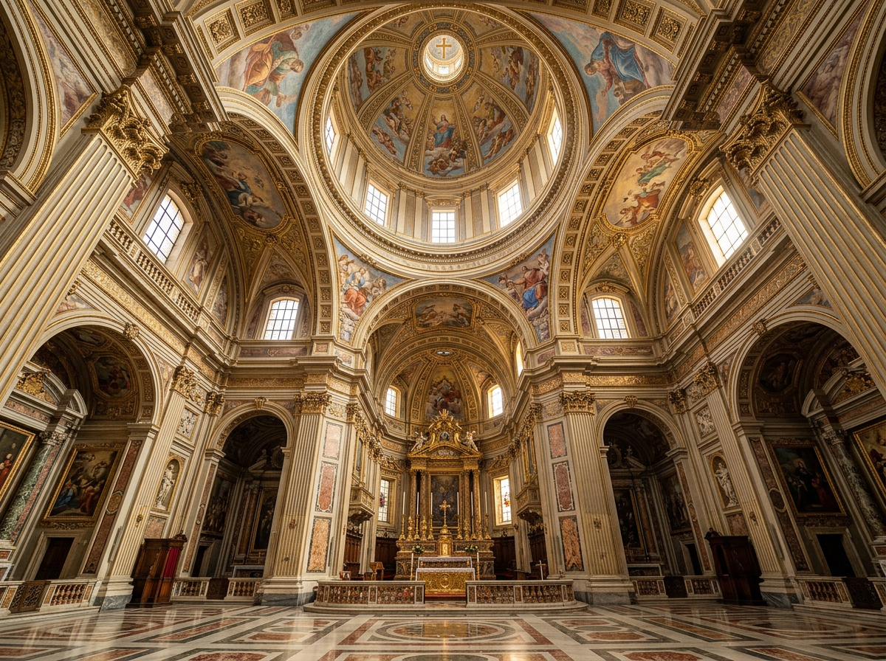

Historic villas of Castel Gandolfo.

The Castel Gandolfo hill has never been just a village. It is a palimpsest: on top of the ruins of Emperor Domitian's imperial villa are layered a Genoese castle from the 1200s, a Savelli fortress that lasted three centuries, and four papal palaces built between 1626 and 1929. Every stone marks a transfer of power. This is the architectural map of the complex, with dates, architects and primary sources.

The Albanum Domitiani: the emperor's villa.
Before the popes, the hill belonged to one man: Emperor Domitian, who between 81 and 96 AD built here a fourteen-square-kilometre residence with a three-hundred-metre covered cryptoporticus and a hippodrome.
The Papal Villas literally rise on top of the remains of the Albanum Domitiani, the vast country residence of Emperor Domitian (81-96 AD). The estate covered around fourteen square kilometres, stretching from the Via Appia to Lake Albano. The hillside was cut into three great terraces sloping toward the sea: the top level held the imperial servants' quarters and cisterns; the middle level the imperial palace and theatre; the lower level the cryptoporticus, the emperor's covered walkway, originally about three hundred metres long ([Papal Villas](https://www.villepontificie.va/it/cenni-storici/castel-gandolfo)).
The cisterns were fed by the springs of Palazzolo, on the opposite shore of the lake, through three aqueducts still partly in use today for the Papal Villa and the town. One of the terraces even held a hippodrome. The poet Juvenal called Domitian the "bald Nero".
After his death, the villa was no longer used as a permanent residence. Hadrian (117-138 AD) stayed briefly while awaiting the completion of his Tivoli villa. Marcus Aurelius took refuge there during the rebellion of 175. Under Septimius Severus (193-211 AD) the southernmost section housed the castra of his Parthian legionaries, who settled with their families: the decline had begun. The marbles were systematically reused for Albano; in the 14th century, the plunder intensified for the construction of Orvieto Cathedral ([Papal Villas](https://www.villepontificie.va/it/cenni-storici/castel-gandolfo)).

The Gandolfi castle and the Savelli fortress.
From 1200 the Genoese Gandolfi fortress dominated the hill; in 1221 it passed to the Savelli, who held it for nearly three centuries until in 1596 the Apostolic Chamber seized the fief for a debt of 150,000 scudi.
Around 1200, on the ruins of ancient Alba Longa, the Genoese Gandolfi family built a square fortress at the top of the hill: high crenellated walls and a small courtyard still visible today. The name of today's Castel Gandolfo derives from that family ([Papal Villas](https://www.villepontificie.va/it/cenni-storici/castel-gandolfo)).
In 1221 the castle passed to the Savelli, who held it with mixed fortunes for nearly three centuries ([Wikipedia — Castel Gandolfo](https://it.wikipedia.org/wiki/Castel_Gandolfo)). It was leased in 1389, destroyed in 1436 by cardinal Vitelleschi, briefly taken by Sixtus IV in 1482, returned to the Savelli in 1486, and elevated to a duchy under Sixtus V (1585-1590). In July 1596, under Clement VIII Aldobrandini (1592-1605), the Apostolic Chamber seized the fief because the Savelli had failed to honour a debt of 150,000 scudi. By consistorial decree of 27 May 1604, Castel Gandolfo was permanently incorporated into the inalienable patrimony of the Holy See.

Urban VIII, Carlo Maderno and the birth of the Palace.
Urban VIII Barberini (1623-1644) had loved staying in Castel Gandolfo since his years as a cardinal. He was the first Pope to spend his summers here: the first papal residency began in the spring of 1626, after the palace enlargement and refurbishment. The work was entrusted to Carlo Maderno, with sub-architects Bartolomeo Breccioli and Domenico Castelli. The Savelli fortress was absorbed into the new palace. The lake wing and the left side of today's facade up to the main portal were built ([Papal Villas](https://www.villepontificie.va/it/cenni-storici/castel-gandolfo)).
Urban VIII also laid out the Moro Garden, whose modest but well-defined design survives today, and the two tree-lined streets of the Galleria di sopra and Galleria di sotto. Alexander VII Chigi (1655-1667) completed the palace: the new facade toward the square, the seaward wing and the great gallery, the last designed and supervised by Bernini. The Apostolic Palace visible today on Piazza della Libertà is essentially the sum of these two campaigns.
Apostolic Palace — 2026 visits
Entry: €11 full, €5 reduced. Combined ticket with Gardens and Antiquarium: €26/€15. Between May and October 2026, public visits may be suspended for the Pope's return. Booking and current availability: musei.vatican.va, mail tours.musei@scv.va, tel. +39 06 69883145.

The cardinal's villa and the flyover that never was.
A project on hold for two centuries: cardinal Camillo Cybo's 1717 plan for a flyover to link palace and garden across the public road below was finally built only after 1929.
In 1717, while still Auditor of the Apostolic Chamber, cardinal Camillo Cybo acquired from architect Francesco Fontana the small palace Fontana had built for himself. The cardinal then bought about three hectares of land opposite, and transformed it into a lavish garden with marbles, statues and fountains ([Papal Villas](https://www.villepontificie.va/it/cenni-storici/castel-gandolfo)).
The flaw was obvious: palace and garden were separated by the public road. Cybo planned to link them with a flyover at the piano nobile level of the garden — a project never realised. He died in 1743. His heirs sold Villa Cybo to the Duke of Bracciano Don Livio Odescalchi, and in March 1773 Clement XIV Ganganelli bought the villa for 18,000 scudi. Cybo's flyover was finally built only after 1929: the loggia connecting Villa Cybo to the Palace passes over the ancient Roman gate, more than two centuries after the cardinal's plan.

The Belvedere Garden on Domitian's terrace.
Villa Barberini sits on the central terrace of the Domitian residence. In 1628, Taddeo Barberini, nephew of Urban VIII, bought the corresponding land and vineyards; in 1631 he added the property of monsignor Scipione Visconti, including a small palace later expanded probably to a design by Bernini ([Papal Villas](https://www.villepontificie.va/it/cenni-storici/castel-gandolfo)).
The Papal Villas reached their current size with the 1929 Lateran Pacts, which brought the Barberini complex officially under the Holy See. New gardens were laid out: the most famous are the Belvedere Gardens, suspended above the Roman cryptoporticus. Since 1929, the papal complex has united three nuclei: the Moro Garden of Urban VIII, Villa Cybo of Clement XIV, and Villa Barberini of Taddeo Barberini.

The Vatican Observatory relocated in 1934.
In 1934 the Vatican Astronomical Observatory left the Vatican palaces for Castel Gandolfo, in search of the darkness needed for celestial observation. One of the oldest continuous astronomy programmes in the world.
In 1934, the Vatican Astronomical Observatory — the Specola — was moved from the Vatican to the Palace of Castel Gandolfo and entrusted to the Jesuit Fathers. The reason was pragmatic: the Rome region had lost the nighttime darkness needed for celestial observation ([Papal Villas](https://www.villepontificie.va/it/cenni-storici/castel-gandolfo)).
Over the decades, even the Castelli Romani sky became too bright for advanced research. In 1993, the Specola opened a satellite site at Mount Graham, Arizona, home of the Vatican Advanced Technology Telescope ([Vatican Observatory](https://www.vaticanobservatory.va/en/)). Castel Gandolfo remains the historic heart of the institution: one of the world's oldest continuous astronomical observations takes place in a 17th-century palace.
The ecological reconversion willed by Pope Francis.
In 2023, at the request of Pope Francis, the 55 hectares of the Papal Villas were transformed into an educational project on the integral ecology of his encyclical: Borgo Laudato Si'. The main entrance is on Via Massimo D'Azeglio. The project integrates organic agriculture, teaching gardens, an olive mill, dairy and gastronomic productions, and educational programmes for schools and visitors ([Borgo Laudato Si'](https://borgolaudatosi.va/it/)).
On 5 July 2026, Pope Leo XIV returned to reside at the Papal Palace, fully restoring the tradition of papal summer residence interrupted by Francis. During papal stays, visits to the Apostolic Palace and gardens may be suspended: always check current availability at musei.vatican.va.

Palaces and churches of the town.
From Bernini's church to Paul VI's Madonna del Lago, from the Roman emissarium of 398 BC to the Antiquarium: six buildings that complete the architectural palimpsest of the papal hill.
Collegiate Church of San Tommaso da Villanova
Designed by Gian Lorenzo Bernini and completed in 1661 under Alexander VII, the town's parish church is one of the few sacred buildings signed by the master of the Baroque. Greek cross plan, dome with lantern, decorations by Antonio Raggi and Pietro da Cortona.
Church of the Madonna del Lago
Commissioned personally by Paul VI and consecrated by him in 1977 on the shores of Lake Albano ([Wikipedia — Castel Gandolfo](https://it.wikipedia.org/wiki/Castel_Gandolfo)). A modern, essential architecture integrated into the crater landscape.
Audience Hall — Villa Cybo
Built at Paul VI's request for the 1975 Holy Year in the extraterritorial area of Villa Cybo, it hosts papal audiences and meetings during summer stays.
Roman lake emissary
An engineering feat from 398 BC: a 1,450-metre tunnel dug into the tuff to regulate the level of Lake Albano, still operational today. One of the oldest underground aqueducts of the ancient world.
Roman Antiquarium
Archaeological museum inside the papal complex, collecting artefacts from Domitian's villa: sculptures, marbles, epigraphs, everyday objects of the Roman aristocracy. Visit included in the combined ticket with the Gardens.
Roman gate and loggia
The arch connecting Villa Cybo to the Papal Palace restores the trace of the ancient Roman gate. Above it runs the connecting loggia built after 1929: the "flyover" cardinal Camillo Cybo had designed two hundred and three years earlier.
Papal summers in Castel Gandolfo were never simple leisure: they are the visible continuity of an idea of sovereignty that spans two thousand years, from the Palatine to Palazzo Barberini.
Want to dig deeper into the history?
Write to info@castelgandolfo.eu for guided tour suggestions, themed itineraries, or corrections. The guide is updated seasonally and every contribution is welcome.